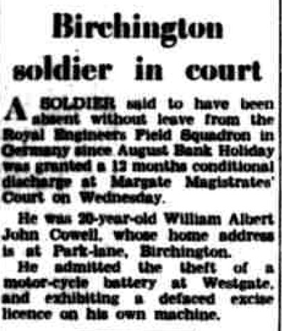
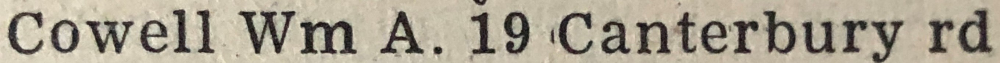
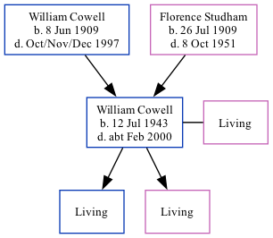

William Albert John Cowell 1943 - c2000
[ Home ] | [ Calendar ] | [ Surnames Index ] | [ Family History ]The 2nd of 3 children of William Cowell (a coal agricultural merchants truck driver) and Florence Studham, William Cowell, the second cousin on the mother's side of Nigel Horne, was born in Thanet, Kent, England on Jul 12, 19431,2,3 and. He married Rosemary Beeching (with whom he had 2 surviving children Paul John and Debra Alison) in Thanet around Nov 19654.
Throughout his life, he lived on Park Lane, Birchington, Kent, England in 1963; and on 19 Canterbury Road, Westgate, Kent in 19745. That is also where he died c. Feb 2000 in Thanet1,3 (melanoma).
Parents
- William John was born on Jun 8, 1909
- Florence May was born on Jul 26, 1909
Citations
- England & Wales deaths 1837-2007 - Findmypast
- England & Wales, Birth Index: 1916-2005 Online publication - Provo, UT, USA: The Generations Network, Inc., 2008.Original data - General Register Office. England and Wales Civil Registration Indexes. London, England: General Register Office. © Crown copyright. Published by permission of the Cont
- England & Wales, Death Index: 1984-2005 Online publication - Provo, UT, USA: The Generations Network, Inc., 2007.Original data - General Register Office. England and Wales Civil Registration Indexes. London, England: General Register Office. © Crown copyright. Published by permission of the Cont
- England & Wales, Marriage Index: 1916-2005 Online publication - Provo, UT, USA: The Generations Network, Inc., 2009.Original data - General Register Office. England and Wales Civil Registration Indexes. London, England: General Register Office. © Crown copyright. Published by permission of the Cont
- 1974 Kelly's Thanet Directory
Media
East Kent Times and Mail - 4 Sep 1963

1974 Kelly's Thanet Directory

England & Wales deaths 1837-2007 - BMD/D/2000/2/83602400
England & Wales marriages 1837-2008 Transcription - BMD-M-1965-4-AZ-000218-025
England & Wales births 1837-2006 - BMD/B/1943/3/AZ/000258/049
Family Tree
Generated by Ged2Site. Last updated on Jul 20, 2025